V.O.R.P.'s Design and Conceptualisation
V.O.R.P. began as a design inspired by a robot Russian nesting doll. The first design was the drawing shown below. Near its base, it would have both ultrasonic and IR distance sensors, along with another IR distance sensor mounted a few inches higher. For mobility, it had two wheels and a front and rear ball caster. It also had a two-finger gripper that would fold out of a slot near its midsection. The gearing of this claw is diagrammed on the right.
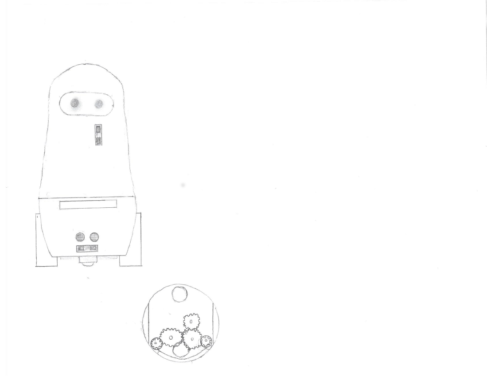Below is another similar diagram. This one shows the internal design. The design of the gripper was completely changed. An Arduino Uno can be seen mounted inside, along with a 9V battery. I had not yet learned my lesson regarding running motorized devices off of 9V batteries. It also shows dimensions in cm (or at least I think it is in cm).
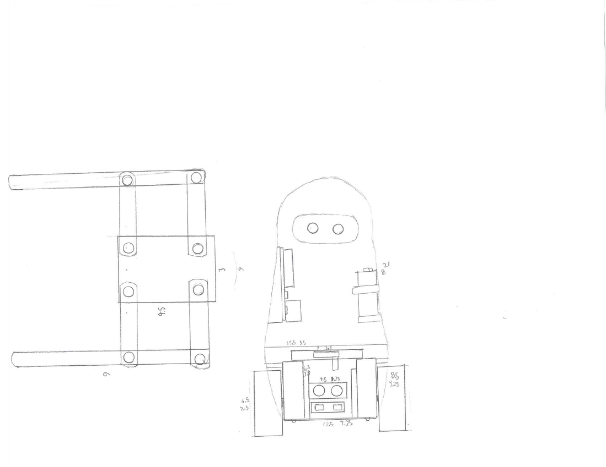Then I decided to completely change the design. I decided that the curves and internal mountings of the previous design would be too difficult to execute. I wanted to build something with a large flat area to easily mount and access the electronics. This new design had a large base to house all of its electronics. The top face of the base would have a piece of plexiglass so that the electronics would be visible. An ultrasonic sensor would be mounted at the front of this base. The head would have two eyes illuminated with LEDs, and an infrared receiver and a photoresistor would be on the top of its head. Two motors can be seen mounted inside the base along with an Arduino and a battery pack.
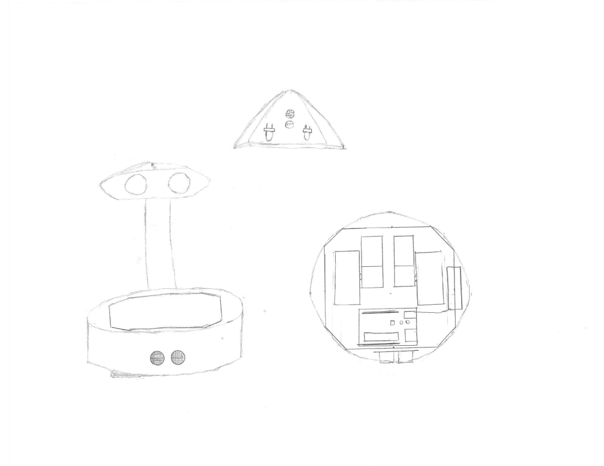I was still not happy with the design, so I took the things that I liked from the previous designs and implemented them in a very different design. I kept the large base, but this time I made the base taller so that a gripper could be mounted below the electronics. This gripper would be mounted in a slot at the front of the base. It was inspired by the gripper of the first design. The top of the base would still be made of plexiglass, keeping the electronics somewhat visible. I also made the base a rectangle so that the electronics would fit better. There is an ultrasonic sensor on the front of the base; below it is the slit for the gripper (similar to the first revision). The wheels were mounted on the sides of the base. The head was intended to both rotate and pitch. The whole head/body assembly was inspired by the PaPeRo robot (and other similar robots).
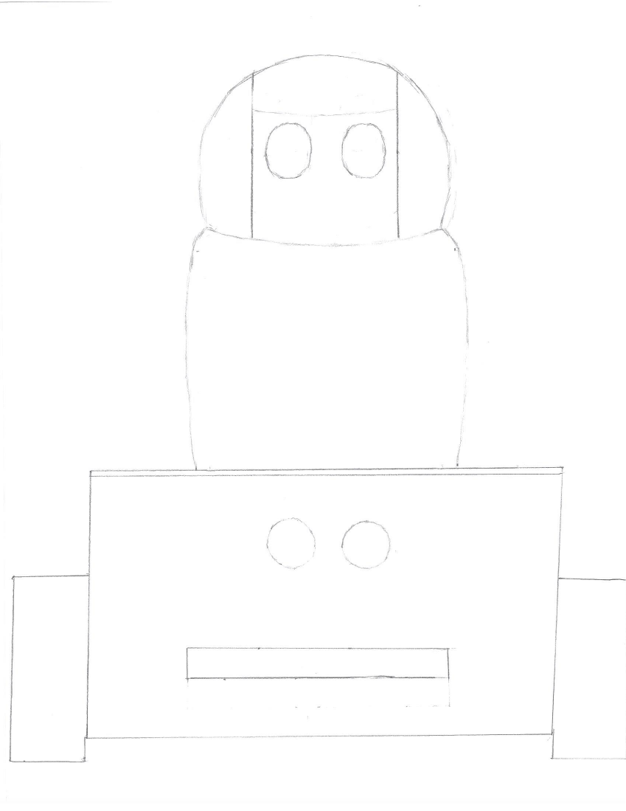Here is a drawing of the internal design of the head and gripper (or at least I think that the diagram on the left is the gripper). I don't remember this design well, so I can't give much of an interpretation.
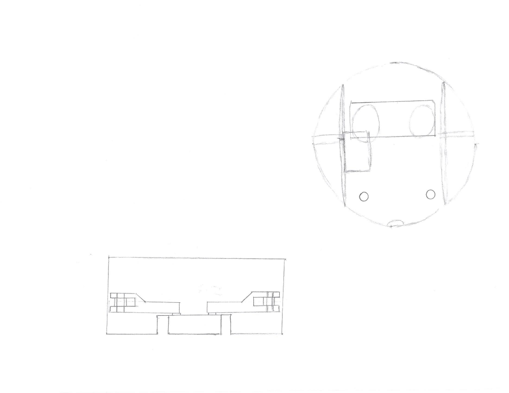This is a diagram of the internal design. The internals of the head are shown, including an ultrasonic sensor that was meant to be mounted behind the eyes. The two small spots on the face are photoresistors. The internal design of the base is also shown. The drive motors are mounted upright on the sides of the base. A small "table" holds the electronics above the area where the gripper was to be mounted. Above this "table", there is an ultrasonic sensor, an Arduino Uno, a 9V battery to power the Arduino, a 4 AA battery pack to power the motors, and a two-channel relay to control the drive motors.
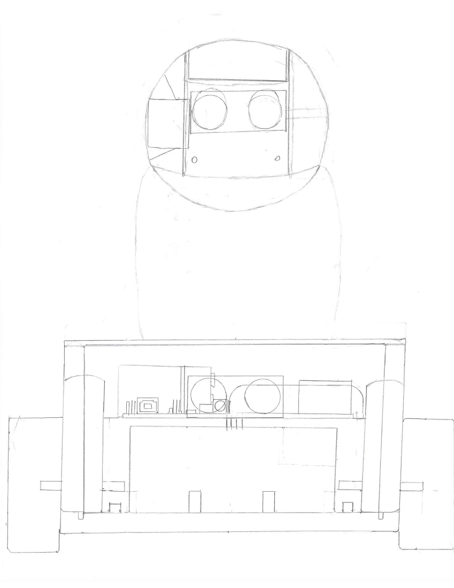I then made a few more revisions. I added arms that were intended to pivot at the shoulder, actuated by a micro servo. The hands were meant to be static, and they were inspired by the hands of the NAO robot by SoftBank Robotics (formerly Aldebaran Robotics). The biggest change was to the head. The two-axis of articulation required for the head of the previous design would be rather difficult to implement, so I decided to create a simpler design. I got inspiration from the Omnibot 2000, and designed a rotating one axis head. This meant that there didn't need to be any motors in the head. LEDs would be placed behind the eyes to make them glow, and photoresistors near the sides of the head would allow it to track light.
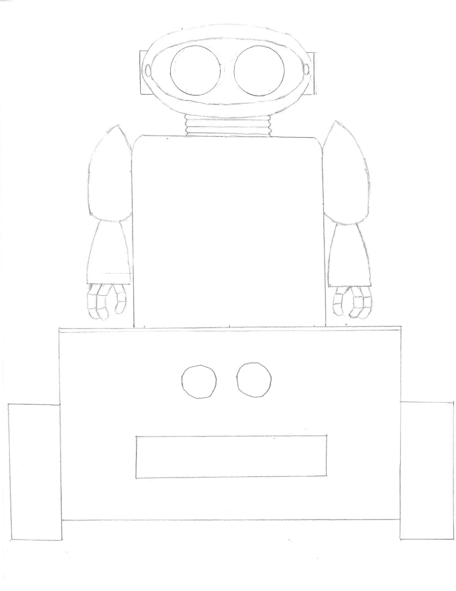I started work on a new revision, but abandoned it because it began to look much worse than the previous design.
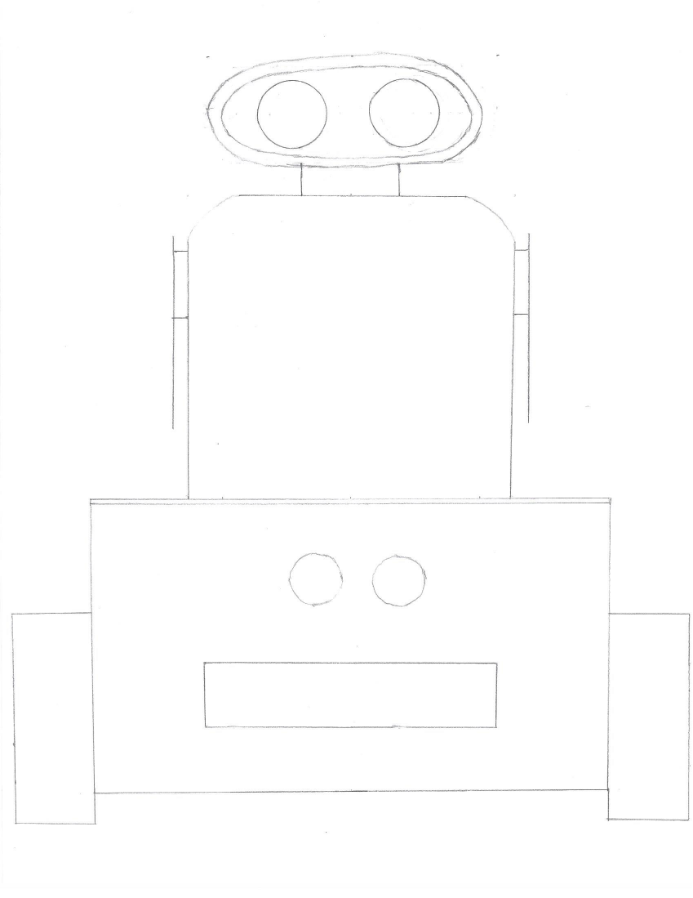This is another failed revision.
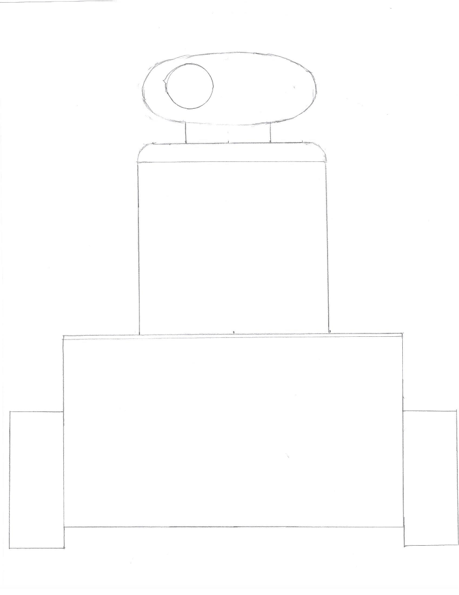I then drew a overhead view of the electronics inside the base. The motors can be seen mounted vertically on the sides. An Arduino UNO and a two-channel relay are visible. There is a 9V battery to power the Arduino and a 4 AA battery pack to power the motors. I didn't realize that a 4 AA battery pack would be inadequate. The measurements of the base are visible in cm.
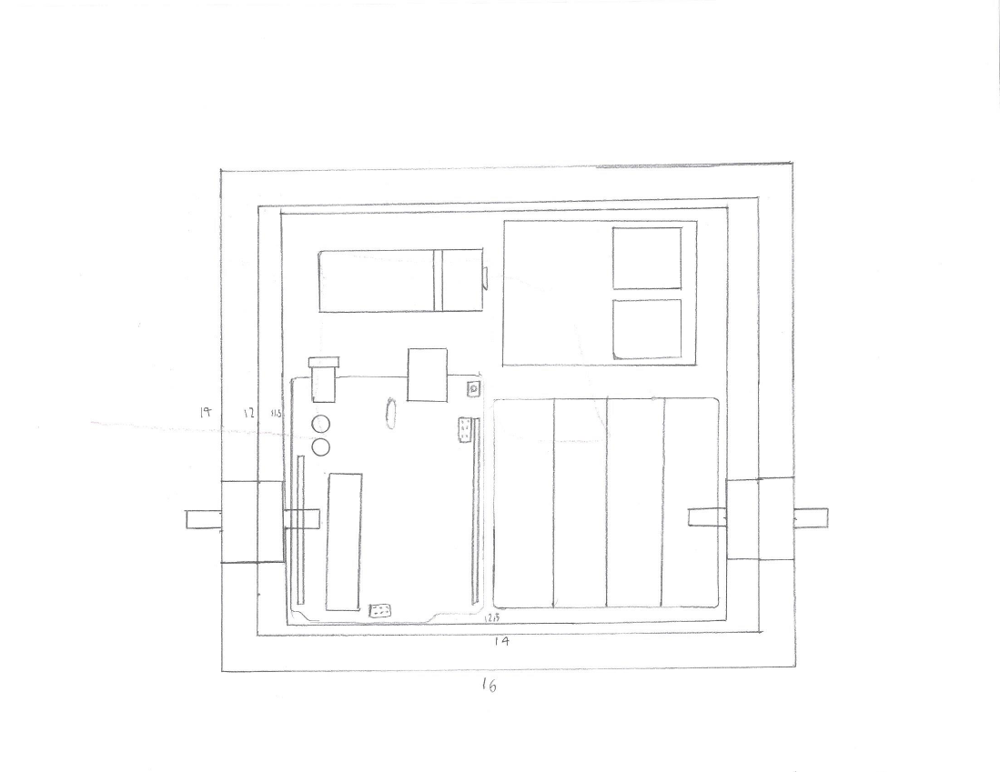All changes made after this point were made in CAD. I did the majority of the 3D design of V.O.R.P. in Tinkercad.
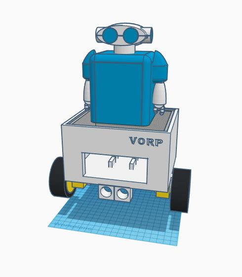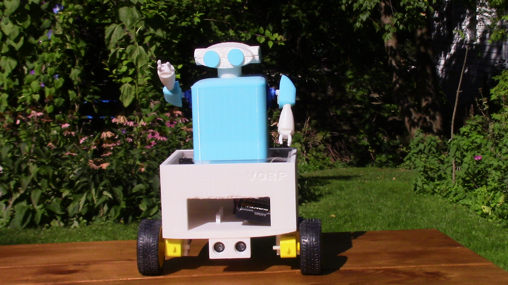
Click For More Information On V.O.R.P.